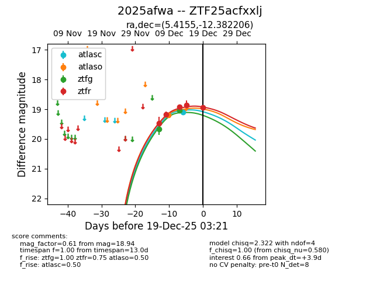
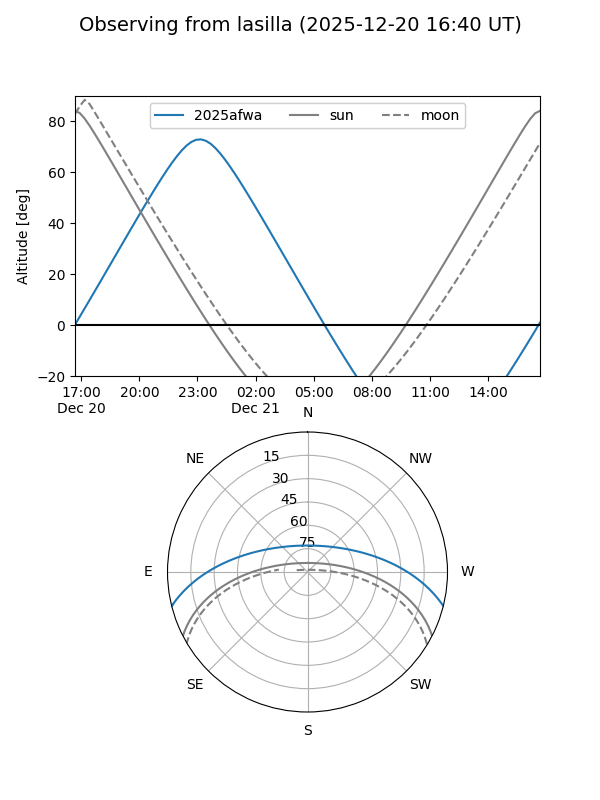
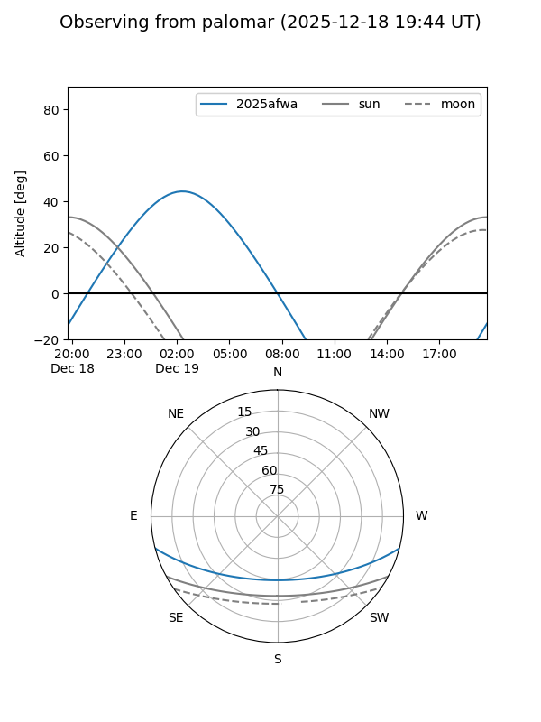
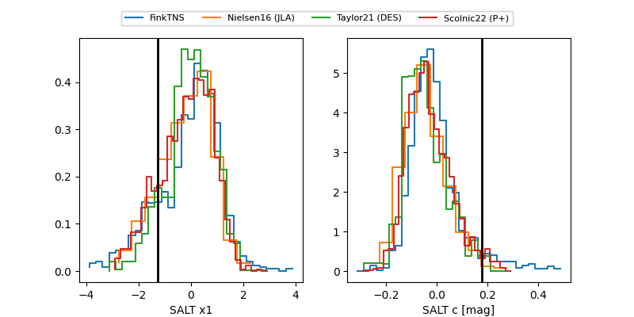

2025afwa
Target 2025afwa at 2025-12-18 11:17
Aliases and brokers:
FINK: fink-portal.org/ZTF25acfxxlj
Lasair: lasair-ztf.lsst.ac.uk/objects/ZTF25acfxxlj
ALeRCE: alerce.online/object/ZTF25acfxxlj
TNS: wis-tns.org/object/2025afwa
YSE: ziggy.ucolick.org/yse/transient_detail/2025afwa
alt names
ZTF25acfxxlj (ztf,fink_ztf)
2025afwa (tns,yse)
Coordinates:
equatorial (ra, dec) = 5.4155,-12.38221
equatorial (HMS+DMS) = 00:21:39.72,-12:22:55.94
galactic (l, b) = (96.1567,-73.68610)
Photometry
last atlasc=19.10, atlaso=19.19, ztfg=19.03, ztfr=18.86
1 atlasc, 1 atlaso, 2 ztfg, 4 ztfr detections
Lightcurve

Visibility


Additional plots
